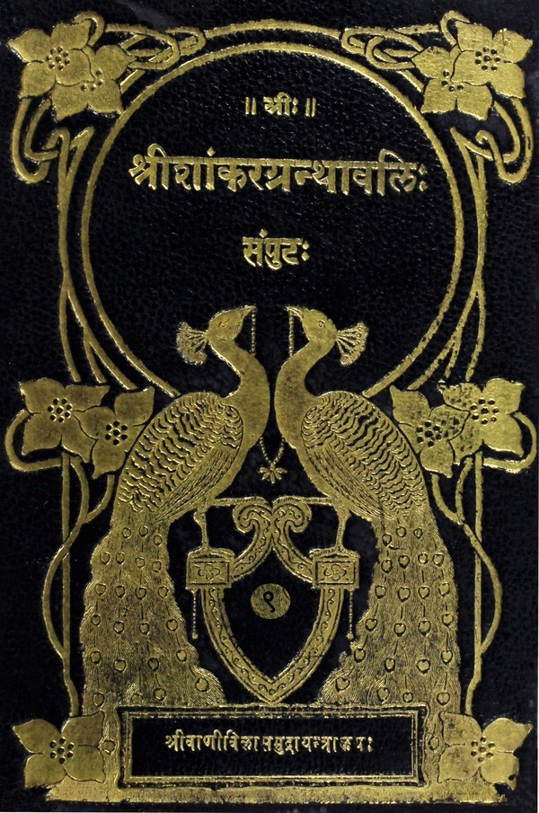

श्रीशांकरग्रन्थावलिः
संपुटः १ - २०
Home
About
Concluding Note
T. K. Balasubramaniam
Superhuman efforts of a savant
Prema Nandakumar
Views on the Sri Vani Vilas Press
His (Sri TKB’s) aim
Volumes
तृतीयोऽध्यायः
प्रथमं ब्राह्मणम्
अतीतेनागमप्रधानेन मधुकाण्डेन उपपत्तिप्रधानस्यास्य याज्ञवल्क्यकाण्डस्य पुनरुक्तिशङ्कानिराकरणपूर्वकं तत्त्वज्ञाने आगमोपपत्त्योः आवश्यकत्वप्रतिपादनम्
आख्यायिका तु ब्रह्मविद्यास्तुत्यर्था, विद्याग्रहणोपायभूतदानविधिपरा, ब्रह्मविद्भिः सह संयोगः विद्याप्राप्त्युपायः इति प्रदर्शनपरा च इति कथनम्
सार्वभौमस्य जनकस्य स्वयज्ञे समागतेषु ब्रह्मवित्सु अनूचानतमः क इति जिज्ञासया तन्निर्णयाय स्वगोष्ठे सालङ्कारगोसहस्रावरोधनप्रदर्शनम्
ततो ब्राह्मणान्प्रति यो वो ब्रह्मिष्ठः तस्यैतद्गोसहस्रमिति जनेकेनोक्ते इतरेष्वप्रगल्भेषु चतुर्वेदी याज्ञवल्क्यः स्वीयब्रह्मचारिणं गवानयने आज्ञापयामास; ततः क्रुद्धेषु ब्राह्मणेषु कश्चित् होता अश्वलो नाम ब्रह्मिष्ठाभिमानि याज्ञवल्क्यं प्रष्टुमुपचक्रमे इति प्रतिपादनम्
मधुकाण्डव्याख्यातोद्गीथोपासनस्यैवायं विस्तरः इति संगतिप्रदर्शनपूर्वकं स्वाभाविकाज्ञानासङ्गप्रयुक्तात् कर्मस्वरूपान्मृत्योः केन साधनेन यजमानस्यातिमुक्तिः— इति अश्वलप्रश्नमुपन्यस्य वाचि होतरि च अग्निदृष्ट्या इति समाधानम्
काललक्षणान्मृत्योः किमतिमुक्तिसाधनम् इति प्रश्नस्य चक्षुरादौ आदित्यादिदृष्टिरिति उत्तरम्
कर्मफलं प्रतिपद्यमानो यजमानः केनावष्टम्भेन तत्प्राप्नोति इति प्रश्नस्य मनसि ब्रह्मणि च चन्द्रमादृष्ट्या— इति समाधानम्
अल्पीयःसु कर्मसु महतां कर्मणां तत्फलस्य वा केनचित्सामान्येन अभेदध्यानात्मकानि संपदुपासनान्युच्यन्ते इति कथनम्
ॠगाहुतिमनःप्रभृतिषु संपदुपासनोपन्यासः
अश्वलप्रश्नोपरमोपपादनम्
द्वितीयं ब्राह्मणम्— आर्तभागयाज्ञवल्क्यसंवादः
बन्धज्ञानं विना ततो विश्लेषायोगात् मुमुक्षोः सप्रयोजकग्रहातिग्रहलक्षणमृत्युरूपबन्धज्ञानाय अनन्तरब्राह्मणप्रवृत्तिरिति वृत्तानुवादपुरःसरं संबन्धकथनम्
कति ग्रहाः कत्यतिग्रहाः— इति आर्तभागप्रश्नस्य घ्राणादयस्त्वगन्ता अष्टौ ग्रहाः, गन्धादयस्पर्शान्ता अष्टौ अतिग्रहाः— इति समाधानम्
उक्तग्रहातिग्रहलक्षणमृत्योः को मृत्युरिति प्रश्नस्य परमात्मदर्शनमित्युत्तरम्
परमात्मदर्शनेन मुक्तस्य विदुषः मृतौ प्राणानामुत्क्रमणमस्ति न वा— इत्यादिप्रश्नस्य, नास्त्युत्क्रमणम्, आत्मन्येव तेषां प्रविलयः— इत्यादिसमाधानम्
अविदुषः मृत्यनन्तरं पुनः कार्यकरणसंघातोपादानस्य प्रयोजकं किमिति प्रश्नस्य कर्म इत्युक्ते समाधाने आर्तभाग उपरराम इति प्रदर्शनम्
तृतीयं ब्राह्मणम्— भृज्युयाज्ञवल्क्यसंवादः
पुण्यपापरूपकर्मणां बन्धहेतुत्वे उक्ते पापफलस्य दुःखबहुलस्य लोकप्रसिद्धत्वेन शास्त्रैकगम्यं पुण्यफलं प्रतिपादयितुं मोक्षस्य पुण्यफलत्वं निरसितुं च उत्तरं ब्राह्मणमिति वृत्तानुवादपूर्वकं संबन्धकथनम्
विद्यासहितस्य कर्मण एव मोक्षजनकत्वमिति केषां चित् मतमुपन्यस्य नित्यसिद्धात्मस्वरूपमोक्षस्य जन्यत्वं न संभवतीति तन्मतदूषणपूर्वकम्, कर्म अज्ञाननिवृत्तिसाधनीभूतज्ञानसाधनं भविष्यतीति स्वमतप्रपञ्चनम्
अश्वमेधयाजिनः क्वाभवन्निति अश्वमेधयाजिनां गम्यस्थाने भृज्युना पृष्टे हैरण्यगर्भं पदमेव तेषां गम्यस्थानमिति महर्षियाज्ञवल्क्येन समाहिते भृज्योः तूष्णीमवस्थानकथनम्
चतुर्थं ब्राह्मणम्— उषस्तयाज्ञवल्क्यसंवादः
यत् ब्रह्म द्रष्ट्रात्मकमगौणम्, यः सर्वान्तरः आत्मा, तं मे विस्पष्टं कथय— इति उषस्तिप्रश्नस्य— यः कार्यकरणसंघातं तद्विलक्षणः सन् चेष्टयति, स आत्मेति आत्मास्तित्वमुक्त्वा घटादिवत्तस्य प्रत्यक्षतो विषयीकरणं तु तत्साक्षित्वादशक्यम्—इत्यादिसमाधानोपन्यासः
पञ्चमं ब्राह्मणम्— कहोलयाज्ञवल्क्यसंवादः
बद्धस्य बन्धमोक्षसाधनं ससंन्यासमात्मज्ञानं वक्तव्यमिति उत्तरारम्भः इति वृत्तानुवादपूर्वकं संबन्धकथनम्
यदेव साक्षादपरोक्षाद्ब्रह्म, य आत्मा सर्वान्तरः तं मे व्याचक्ष्वेति कहोलप्रश्नमुपन्यास्य, तस्य क्षेत्रज्ञविषयात् उषस्तप्रश्नात् परमात्मरूपार्थपरत्वमिति मतान्तरोपन्यासः
प्रश्नप्रतिवचनयोरैकरूप्यादिना अर्थान्तरपरत्वं न संभवतीति तन्मतदूषणपूर्वकं पूर्वं पृष्टस्यैव अशनायाद्यतीतत्वादिविशेषो वक्तव्य इति पुनः प्रश्नः— इति स्वमतोपन्यासः
आत्मनः परमार्थतः अशनायादिसर्वधर्मातीतत्वमुपपाद्य तमेतमात्मानं विदुषः त्रिविधैषणाभ्यो व्युत्थानरूपसंन्यासविधिनिरूपणम्
`व्युत्थाय अथ भिक्षाचर्यं चरन्ति' इत्यस्य विधायकप्रत्ययाभावेन अर्थवादत्वमेवेति शङ्कायाः, `औदुम्बरो यूपो भवति' इतिवत् अज्ञातार्थत्वेन पञ्चमलकारत्वनिश्चयात् विधायकत्वोपपत्तिः— इति निरसनम्
पारिव्राज्यस्य मुख्यामुख्यभेदेन द्वैविध्यकथनम्
सर्वकर्मपरित्यागरूपमुख्यसंन्यासविशिष्टेन अशनायादिसर्वधर्मातीतात्मस्वरूपविज्ञानेन ब्राह्मणः कृतकृत्यो भवति, अतः स एव विज्ञेयः इत्युपपादनम्
षष्ठं ब्राह्मणम्— गार्गीयाज्ञवल्क्यसंवादः
उक्तस्य सर्वान्तरस्यात्मनः स्वरूपाधिगमाय उत्तरो ग्रन्थः इति संबन्धकथनम्
गार्ग्याः स्थूलप्रपञ्चकारणपरम्पराप्रश्नः, याज्ञवल्क्येन तत्तत्कारणनिरूपणक्रमेण अण्डारम्भकभूतपर्यन्तकारणनिरूपणं च
सप्तमं ब्राह्मणम्— उद्दालकयाज्ञवल्क्यसंवादः
सूत्रात्मनः अन्तर्यामिणश्च आचार्योपदेशैकगम्यत्वख्यापनाय इतिहासपुरःसरं कः सूत्रात्मा कश्चान्तर्यामी— इति उद्दालकप्रश्नोपन्यासः
यत् सर्वभूतसंदृब्धिहेतुभूतं वाय्वात्मकं सप्तदशविधं लिङ्ग कर्मवासनासमवायि, तत् सूत्रम्, यः सर्वप्रपञ्चाभ्यन्तरः सर्वैरवेद्यः सर्वनियन्ता अमृतः आत्मा, सः अन्तर्यामी— इति च याज्ञवल्क्यप्रतिवचनोपन्यासः
अष्टमं ब्राह्मणम्— गार्गीयाज्ञवल्क्यसंवादः
पूर्वं याज्ञवल्क्येन निषिद्धा मूर्धपातभयादुपरता सती गार्गी पुनः ब्राह्मणानुज्ञापुरःसरं प्रश्नद्वयं प्रष्टुमुत्थितवती— इत्युपपादन्म्
सर्वं जगत् यस्मिन् सूत्रसंज्ञके एकीभवति, तत्सूत्रं कस्मिन्नोतं च प्रोतं च— इति प्रथमस्य गार्गिप्रश्नस्य, अव्याकृताकाशे— इति याज्ञवल्क्यप्रतिवचनम्
स चाव्याकृताकाशः कस्मिन्नोतश्च प्रोतश्च— इति द्वितीयप्रश्नस्य— अक्षरे परब्रह्मणि— इत्युत्तरमुक्त्वा तस्य चाक्षरस्य `अस्थूलम्' इत्यादिना निषेधमुखेन अस्तित्वोपपादनम्
तस्यैवाक्षरस्यास्तित्वसिद्धये जगद्व्यवस्था प्रशामितृपूर्विका, व्यवस्थात्वात् राजव्यवस्थावत्— इत्याद्यनुमानोपन्यासः
मोक्षहेतुज्ञानविषयत्वेनापि तदस्तित्वोपन्यासः
दुरुत्तरस्य प्रश्नद्वयस्य समाधाने दत्ते, न कोऽपि युष्माकं मध्ये याज्ञवल्क्यस्य जेता विद्यते इति— ब्राह्मणानुक्त्वा गार्गी उपरराम इत्युपपादनम्
नवमं ब्राह्मणम्— शाकल्ययाज्ञवल्क्यसंवादः
ब्रह्मणः सर्वनियन्तृत्वस्योक्तत्वात् नियन्तव्यदेवताभेदसंकोचविकासद्वारा तस्यैव साक्षादपरोक्षत्वे अधिगन्तव्ये— इत्येतदर्थं शाकल्यब्राह्मणारम्भः— इति वृत्तानुवादपूर्वकं संबन्धकथनम्
शाकल्यकृतस्य देवतासंकोचविकासप्रश्नस्य— प्राणान्तः संकोचः आनन्त्यपर्यन्तो विकास इति संकोचविकासाभ्यां प्राणस्वरूपोक्त्या प्रतिवचनम्
तस्यैव प्राणस्य ब्रह्मणः देवलोकपुरुषभेदेन त्रिधा त्रिधा आत्मानं प्रविभज्यावस्थितस्य उपासनार्थं पुनः अष्टधा भेदोपदेशः
अथ याज्ञवल्क्योक्तं स्वानिष्टबोधकमपि वाक्यमन्यथा प्रतिपद्य शाकल्येन दिग्वज्ञानविषये कृतस्य प्राच्यां का देवता दिगात्मनस्तवाधिष्ठात्री इत्यादिप्रश्नस्य— आदित्यदेवता— इत्याद्युत्तरमुपन्यस्य, अन्ते `स एष नेति नेत्यात्मा' इत्यात्मस्वरूपोपदेशः
अथ औपनिषदः पुरुषः क इति याज्ञवल्क्यप्रश्नस्य उत्तरं वक्तुमशक्त्या शाकल्यमूर्धपातवर्णनम्
अथ ब्राह्मणान्प्रति याज्ञवल्क्येन यो वः कामयते स मा पृच्छतु— इत्युक्ते, तेष्वप्रगल्भेषु पुनस्तान्प्रति जगन्मूलप्रश्ने कृते तैस्तदज्ञानात् जिता ब्राह्मणा याज्ञवल्क्येन नीतं च गोधनं तेनैवेति आख्यायिकासमाप्तिप्रदर्शनम्
`विज्ञानमानन्दं ब्रह्म' इति श्रुत्या विधिमुखेन ब्रह्मण उपदेशः
विचारपूर्वकं ब्रह्मानन्दस्य संवेद्यत्वाभावसमर्थनम्
चतुर्थोऽध्यायः
प्रथमं षडाचार्यब्राह्मणम्
उपदिष्टस्यैव ब्रह्मण अधिगमने उपायान्तरस्य प्रदर्शनार्थमयमारम्भ इति वृत्तानुवादपूर्वकं ब्राह्मणद्वयस्य संबन्धकथनम्
स्वसभागतयाज्ञवल्क्यं प्रति किमर्थमागमनं पश्विच्छया सूक्ष्मवस्तुनिर्णयान्तप्रश्नश्रवणेच्छया वा— इति जनकेनोक्ते उभयार्थमिति याज्ञवल्क्योक्तिः
जनकं प्रति परैरुपदिष्टस्य ज्ञानसाधनस्य वागाद्यधिष्ठातृदेवतासु ब्रह्मोपासनस्य याज्ञवल्क्येन विशेषणानामुपदेशेन संपूर्णोपासनोपदेशः
द्वितीयं कूर्चब्राह्मणम्
विश्वतैजसप्राज्ञविज्ञानोपपादनपूर्वकं तुरीयबह्मप्रतिपत्तिप्रकारोपन्यासः
तृतीयं ब्राह्मणम्
जाग्रत्स्वप्नसुषुप्ततुरीयोपन्यासानन्तरं जाग्रत्स्वप्नादिद्वारेणैव महता तर्केण विस्तरेण तस्यैव प्रस्तुतस्य ब्रह्मण अधिगमः कर्तव्यः ब्रह्मणश्च व्यतिरिक्तत्वशुद्धत्वादिकं प्रदर्शनीयमित्येतदर्थमुत्तरारम्भः — इति वृत्तानुवादपूर्वकसंबन्धकथनम्
जनकं द्रष्टुं गतस्य न वदिष्ये— इत्येवं संकल्पस्यापि याज्ञवल्क्यस्य पूर्वमेव राज्ञे कामप्रदानाख्यवरस्य दत्तत्वेन संकल्पितान्यथाकरणोपदेशः
किं ज्योतिरयं पुरुषः— इत्यादिजनककृतप्रश्नानाम्— आदित्यज्योतिः— इत्यादियाज्ञवल्क्यदत्तोत्तरोपन्यासः
आदित्यादिवागन्तेषु ज्योतिःषु अस्तमितेषु किं ज्योतिरयं पुरुषः— इति जनककृतप्रश्नस्य, आत्मैवास्य ज्योतिः— इति याज्ञवल्क्यप्रतिवचनोपन्यासः
कार्यकरणसंधात एवात्मा— इति लोकायतमतमुपन्यास्य, स्वप्नस्मृत्यादिसिद्ध्यनुपपत्त्या देहातिरिक्त आत्मा अभ्युपगन्तव्यः— इति सिद्धान्तोपन्यासः
कतम आत्मा— इति जनकप्रश्नस्य— योऽयं विज्ञानमयः इत्यादियाज्ञवल्क्योत्तरम्
जाग्रत्काले आत्मज्योतिषःमुञ्जेषीकावत् निष्कृष्य दर्शयितुमशक्यत्वात् स्वप्ने स्वयंज्योतिष्ट्वप्रतिपादनम्
धीव्यतिरिक्त आत्मा नास्त्येव, धीव्यतिरिक्ता बाह्यार्था अपिन सन्त्येव—इत्यादिसौगतपक्षमुपन्यास्य, अवभास्यस्यैव अवभासकत्वं न संभवति इत्याद्यनेकयुक्तिभिः तत्खण्डनपूर्वकं धीव्यतिरिक्तात्मव्यवस्थापनम्
विशेषतः स्वप्नावस्थोपपादनपूर्वकम् आत्मनः स्वयंज्योतिष्ट्वस्यैव विस्तरेणोपपादनम्
स्वयंज्योतिष्ट्वाद्युक्तार्यप्रतिपादकमन्त्रार्थविवरणम्
स्वप्ने कार्यकरणव्यावृत्तस्यापि मोदत्रासादिदर्शनात् नैवायं मृत्युमतिक्रामति, अतो विमोक्षाय ब्रूहि-इत्येवं जनकपर्यनुयुक्तयाज्ञवल्क्येन सुषुप्ते आत्मनो मोदत्रासादिराहित्यप्रतिपादनपूर्वकमसङ्गत्वोपपादनम्
स्वप्ने कर्तृत्वाभावात् जागरिते च कारकावभासकत्वेन कर्तृत्वोपपत्तेः स्वतः कर्तृत्वाभावात् असङ्गत्वोपपादनम्
उक्तार्थे महामत्स्यदृष्टान्तप्रदर्शनम्
श्येनवाक्येन आत्मनः सौषुप्तरूपोपन्यासः
आत्मनः परोपाधिकृतं संसारधर्मित्वं यन्निमित्तम्, तस्याः सर्वानर्थबीजभूताया अविद्यायाः सतत्त्वोपपादनम्
सर्वात्मभावरूपमोक्षस्य विद्याफलस्य प्रत्यक्षतो निर्देशपूर्वकं जीवस्य परेणात्मना एकीभूतस्य विशेषज्ञानाभावे— `तद्यथा प्रियया स्त्रिया' — इत्यादिदृष्टान्तोपन्यासः
सुषुप्ते पित्रादीनां पितृत्वाभावप्रतिपादनम्
सुषुप्तौ द्रष्टुः अविनाशित्वात् तदृष्ट्यादेरविनाशित्वप्रतिपादनपूर्वकम्, द्वितीयवस्त्वभावात् न पश्यतीति व्यवहारोपपत्तिः इत्युपन्यासः
प्रतीचः चिन्मात्रज्योतिषः विशेषविज्ञानराहित्यमेव स्वरूपम्, तथापि स्वाविद्याकल्पितविशेषविज्ञानवत्त्वमाश्रित्य अवस्थाद्वयं सिध्यातीति प्रतिपादनम्
पूर्वोक्तस्य प्राज्ञस्य सलिलवत् स्वच्छस्य आनन्दरूपस्य ब्रह्मवस्तुनः उपपादनोपसंहारः
यस्य परमानन्दस्य अन्यानि भूतानि मात्रामुपजीवन्तितस्य मात्रिणः मनुष्यानन्दमारभ्य उत्तरोत्तरं शतगुणोत्कर्षवर्णनेन सर्वोत्कृष्टत्वप्रतिपादनम्
प्रतिपादितस्य सुषुप्तिस्वप्नादेः वक्ष्यमाणमोक्षबन्धनदृष्टान्तत्वात्, दार्ष्टन्तिके ते वक्तव्ये-इत्येतदर्थमुत्तरारम्भः— इति पूर्वोत्तरसंबन्धकथनम्
`तद्यथा अनः' इत्यारभ्य `इति नु कामयमानः' इत्यन्तेन ग्रन्थेन संसारवर्णनमिति ग्रन्थविभागकथनम्
आत्मनः स्वप्नान्तात् बुद्धान्तगमनवत्— अस्माद्देहात् देहान्तरप्रतिपत्तौ भृशाहितसंभारशकटदृष्टान्तोपन्यासः
आत्मन ऊर्ध्वोच्छ्वासित्वं कस्मिन्काले किंनिमित्तं कथं किमर्थं वा इति प्रश्नानुत्थाप्य, यदा जरादिना कार्श्यं प्राप्नोति, तदा अनेकविधमरणनिमित्तेभ्यः वृन्तेभ्यः फलानीव पुनः प्राणानां विशेषाभिव्यक्तिलाभाय अङ्गेभ्यः प्रमुच्यते— इत्युत्तरोपन्यासः
शरीरं परित्यज्य गच्छत आत्मनो देहान्तरोपादाने सामर्थ्थाभावशङ्कायाः राजभृत्यदृष्टान्तेन सर्वभूतान्यादित्यादीनि तत्कर्मप्रयुक्तानि कृतैरेव कर्मफलोपभोगसाधनैः कर्मफलवेदितारं प्रतिक्षन्ते— इति समाधानकथनम्
`राजानं प्रयियासन्तम्' इत्यादिदृष्टान्तेन आत्मानमन्तकाले सर्वे प्राणा अभिसमायन्ति— इति कथनम्
चतुर्थं शरीरकब्राह्मणम्
आत्मन अङ्गेभ्यः संप्रमोक्षणस्य उक्तस्यैव विस्तरेण उपपादनम्
परलोकाय गच्छन्तमात्मानं विद्याकर्मणी पूर्वप्रज्ञा च अनुगच्छन्तीत्युपपादनम्
देहान्तरारम्भे देहान्तरं पूर्वाश्रयं विमुञ्चतीत्यत्र तृणजलूकादृष्टान्तोपन्यासः
आत्मनः ये बन्धनसंज्ञका उपाधिभूता बुद्ध्यादयः कामकर्मादयश्च, तेषां पुञ्जीकृत्य निर्देशः
संसारप्रकरणमुपसंहृत्य अकामस्य आत्मकामस्य ब्रह्मविदः न प्राणा उत्क्रामन्ति, किं तु इहैव ब्रह्मैव सन् ब्रह्म अप्येति इति प्रतिपादनम्
उक्तस्य मोक्षस्य मोक्षसाधनस्य दृढीकरणाय मन्त्रार्थोपन्यासः
आत्मकामस्य ब्रह्मविदो मोक्ष इत्येतस्मिन्नर्थे मन्त्रब्राह्मणाभ्यामुपसंहृते तस्यैवार्थस्य विस्तरेण प्रतिपादका एते श्लोका इति उत्तरसंदर्भस्य संबन्धकथनपूर्वकं ज्ञानमार्गस्य मोक्षसाधनत्वोपदेशः
प्रस्तुतज्ञानमार्गस्तुत्यर्थं मार्गान्तरनिन्दाप्रतिपादनम्
उक्तात्मज्ञानस्तुत्यर्थमेव तन्निष्ठस्य कायल्केशराहित्यप्रतिपादनम्
ब्रह्मविदो विद्यया कृतकृत्यत्वे स्वानुभवसंप्रतिपत्तिप्रतिपादनम्
विद्यास्तुत्यर्थं विदुषो विहिताकरणादिप्रयुक्तभयाभावप्रतिपादनम्
आचार्योपदेशजन्यपरमार्थज्ञानसंस्कृतमनसो ब्रह्मदर्शनसाधानत्वोपदेशः
प्रतिपादिते ब्रह्मात्मनि सर्वस्य वेदस्य विनियोगप्रदर्शनार्थमुत्तरकण्डिकेत्येवं पूर्वोत्तरसंबन्धप्रदर्शनपूर्वकं विविदिषावाक्येन ब्रह्मात्मज्ञाने विनियोगकरणार्थं तत्पूर्वतनवाक्येन ब्रह्मात्मनोऽनुवादप्रदर्शनम्
षष्ठप्रपाठकविहितायां ब्रह्मविद्यायां वेदानुवचनादीनां विनियोगप्रदर्शनम्
आत्मलोकावाप्त्यर्थत्वेन पारिव्राज्यविधाननिरूपणम्
उक्ते विद्याफले मन्त्रेण संवादनिरूपणम्
निरूपाधिकबह्मविद्याया मोक्षफलकथनपूर्वकं थाज्ञवल्क्याय गुरवे कृतकृत्यजनककृतस्वनिवेदनप्रतिपादनम्
सोपाधिकब्रह्मविद्याया अभ्युदयफलप्रदर्शनम्
समस्तारण्यकार्यस्य समुञ्चित्य निर्देशः
पञ्चमं मैत्रेयीब्राह्मणम्
आगमेनाधिगतममृतत्वसाधनं ससंन्यासमात्मज्ञानं तर्केणाप्यधिगन्तव्यमित्येतदर्थमुत्तरं ब्राह्मणमिति वृत्तानुवादेन संगतिकथनम्
प्रव्रजिष्यन्तं याज्ञवल्क्यं प्रति स्वज्येष्ठभार्थाय मैत्रेय्या अमृतत्वसाधनं किमिति प्रश्नोपन्यासः
निरुपाधिकपरमप्रेमास्पदीभूतात्मज्ञानमेव ससंन्यासममृतत्वसाधनमित्युपदिश्य याज्ञवल्क्यः प्रवव्राज इत्युपपादनम्
यावज्जीवादिश्रुतीनां व्युत्थानादिश्रुतीनां च विचारपूर्वकम् अविद्वात्कामिकर्तव्यार्थत्वविद्वद्विरक्तकर्तव्यार्थकत्वरूपविषयविभागप्रदर्शनम्
षष्ठं वंशब्राह्मणम्
ब्रह्मविद्यास्तुत्यर्थं याज्ञवल्क्यकाण्डस्य आचार्यपरम्परोपदेशः

बृहदारण्यकोपनिषद्भाष्यम्
(Brihadaranyakopanishad Bhashya)